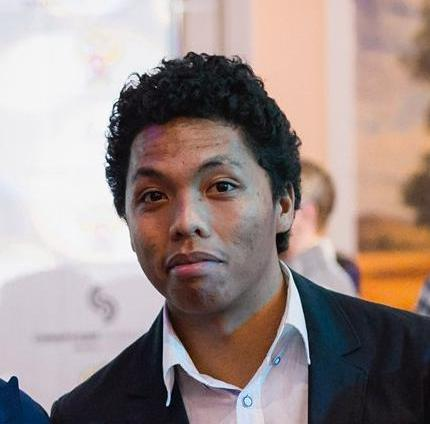

About me
 Hello, welcome to this web page, my name is Onja RAKOTONDRAVELO, I am a freshly graduate from the University of Bordeaux, France with a Master of Science in Aircraft Engineering and Maintenance. Probably, you are aware of the situation of the aircraft industry at this moment. Because of that, I have decided to do a complete professional reorientation in term of career goals and projects keep developing into that field.
I have always been interested in programming, and since I was working in data development in Airbus, I have decided to pursue a path of data scientist. My actual plan know to find a job or an internship that can allow me to get some experience in data science and get to the advanced level.
About my non-typical path
Saint-Petersburg
Back in 2011, I graduated from high school with a very good result (but there is nothing to be proud of). Back then, I was proposed to apply for scholarship program to study abroad. I did have many choice to begin with but the first answer I have got was studying in Russia. So in September 2012 I left my home country for a country that was barely known by myself. We were a group of ten (10) young students who were part of the scholarship program. Everybody, of course, had their own university but, we were the ones chosen from few hundreds students.
So we arrived in Moscow at night, I barely remember the time, but it was already dark. An official from the embassy of Madagascar in Moscow met us (He was a country-mate) but he rapidly left us on the hands of two Russians, who didn't know how to speak English. In other hand, we did no know how to speak Russian. So, the adventure began, with no understanding of each other. After that, I spent one year in Saint Petersburg studying the russian language. It was a very rich experience for me during that time. I visited some of the most famous places of the city such as “The hermitage museum”, “Peter and Paul’s fortress”, “Peterghof” and so more.
Samara
I had to leave Saint-Petersburg at the end of july 2013 for another city, where my university was. So I arrived to Samara, I met few country-mates there. I began my bachelor program in Aircraft Engineering. I got my degree in 2018 and had the chance to watch some of the matches of the 2018 World Cup.
Samara was the city where I lived the main part of my life, about five years. I started to have a big interest towards working out and gym. I started going to the gym by the end of 2015, and I ended up actually liking the life of so called “wellness”. At my peak, I could bench 100 kg, squat 140 kg and dead-lift 160 kg. What a guy may you say, but it was not that impressive if you had seen other big men who could crush anything with bare hand. But working out is not about competition with others, but more like competition with yourself. Always being better than what you were yesterday. Always surpass what you did the day or the week before.
France
At the end of September 2018, I left Russia for France to pursue a Master degree program in Aircraft Engineering. I got to work as an intern in a laboratory of the university by the end of the same year. One year after, I’ve been chosen for an apprenticeship program in Airbus as a data analyst. Eventually, at the end of the year 2019, I thought I have succeeded but life said: “No, wait a minute”, covid-19 appeared. It crushed the entire world so fast that some of the industries are still trying to stand at this moment, and so did my dreams. That’s why I have moved on and tried to transfer my knowledge into another field, so I began learning by myself advanced programming with python. I did a bootcamp on Data Science to get the main ideas behind the sexiest job of the 21th century. Then I enrolled on a certification program from MIT on Machine Learning. Actually, I am pursuing a MicroMaster in Data Science and Big Data Analytics from UC San Diego, and at the same time, practicing on kaggle, and learning frontend tools.